Aparelho metálico
O aparelho tradicional, com bráquetes de metal colados nos dentes e ligados por um fio.
- Fica fixo, sem precisar tirar e colocar
- Usado em diversos tipos de caso
- Ajustes nas consultas de manutenção
Aparelho metálico, de porcelana ou alinhador transparente, pelo seu convênio ou particular. A Dra. Nayane Moreno avalia o seu caso, explica as opções e só indica tratamento quando ele é realmente necessário.
Se alguma delas faz parte da sua rotina, ou da rotina do seu filho adolescente, vale uma avaliação de ortodontia.
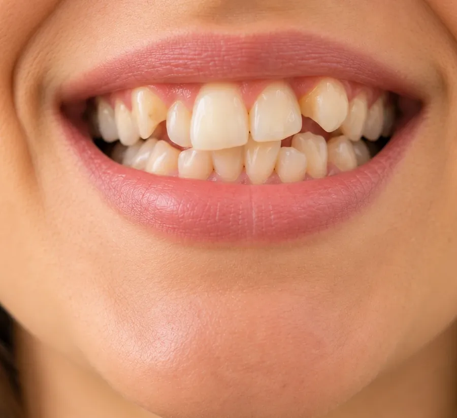
Dentes fora de posição, um por cima do outro, difíceis de limpar.
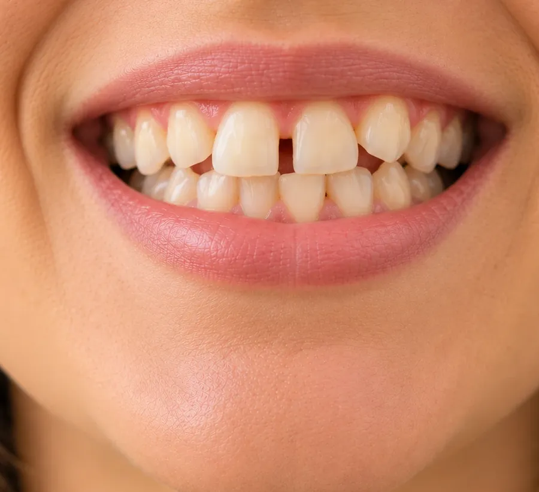
Aquele espaço que incomoda no sorriso e nas fotos.
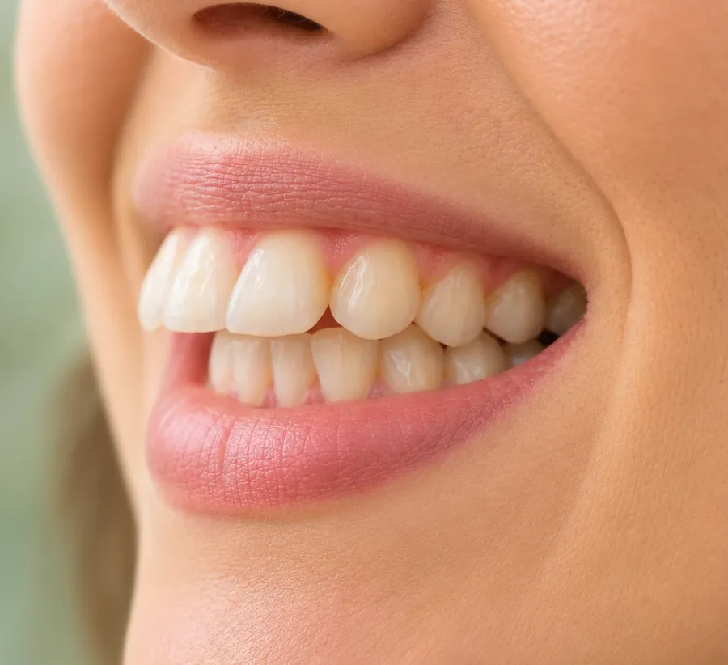
Dentes da frente projetados, que mudam o jeito de sorrir.
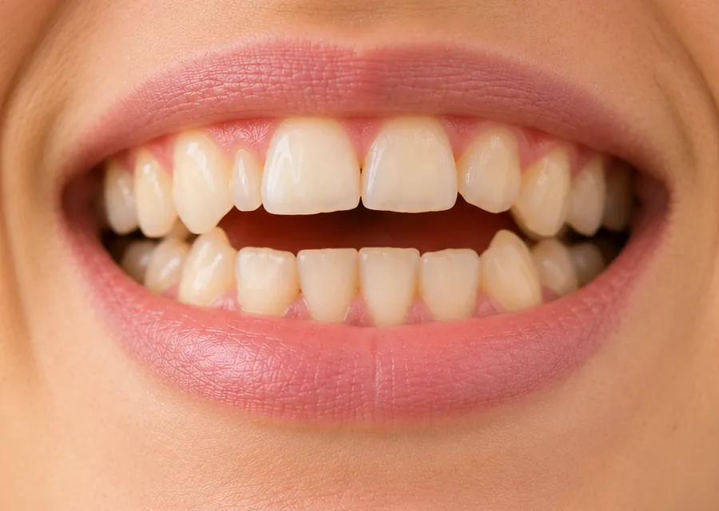
Os dentes de cima e de baixo não se encontram como deveriam.
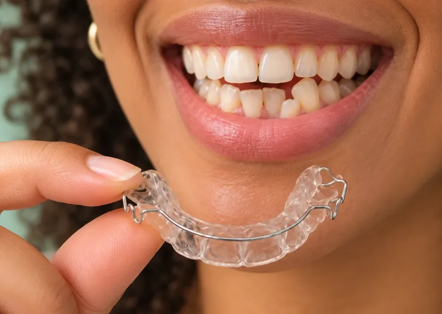
Fez tratamento antes e percebeu que os dentes voltaram a sair do lugar.
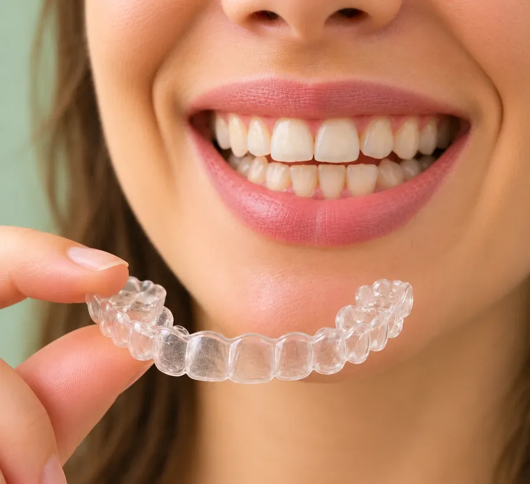
Prefere uma opção que apareça menos no dia a dia e no trabalho.
Imagens ilustrativas. Cada caso é único e depende da avaliação clínica.
Só a avaliação mostra se o aparelho é indicado e qual tipo combina com o seu caso.
Agendar avaliação pelo WhatsAppTrês caminhos para alinhar os dentes. A escolha depende do seu caso, da sua rotina e do que é importante para você.
PENDENTE: a Dra. Nayane confirmar os três tipos (metálico, porcelana e alinhador) e a marca do alinhadorO aparelho tradicional, com bráquetes de metal colados nos dentes e ligados por um fio.
Funciona como o fixo tradicional, mas com bráquetes na cor dos dentes, que aparecem menos no sorriso.
Placas transparentes, feitas sob medida e trocadas ao longo do tratamento, conforme o planejamento.
A indicação do aparelho, a duração e a frequência das consultas dependem da avaliação de cada caso.
Fotos de um paciente da Dra. Nayane, do início do tratamento até o momento atual. O tratamento ainda está em curso, e cada caso evolui de um jeito.
PENDENTE: autorização por escrito do paciente e do responsável, conferência da norma do CFO/CRO-SE e fotos em JPG leve (até 1 MB cada)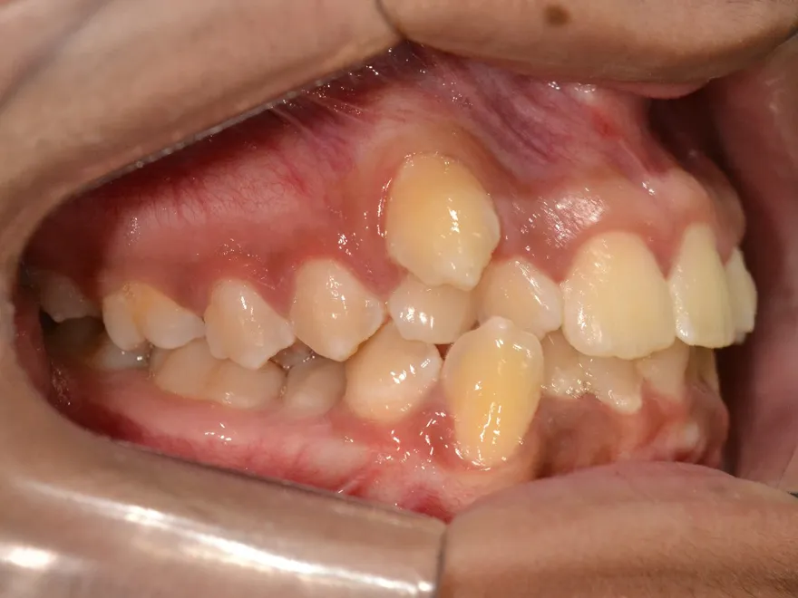
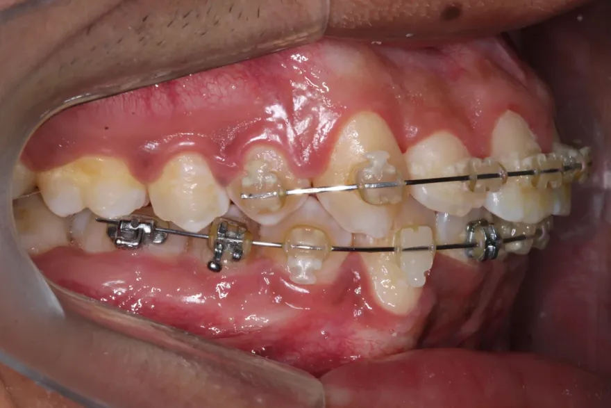
No início, dentes da frente projetados. Hoje, o caso segue em acompanhamento com o aparelho.
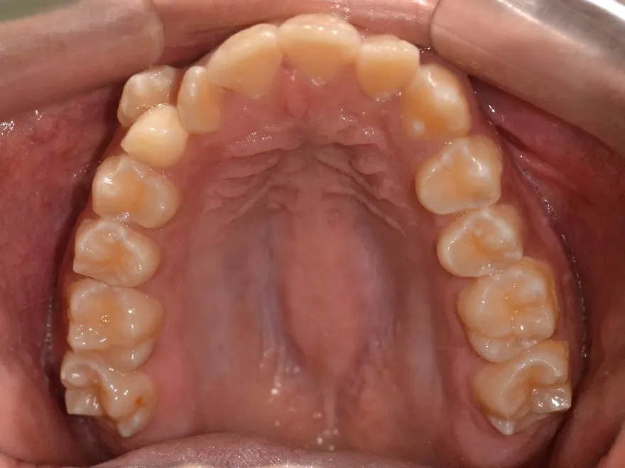
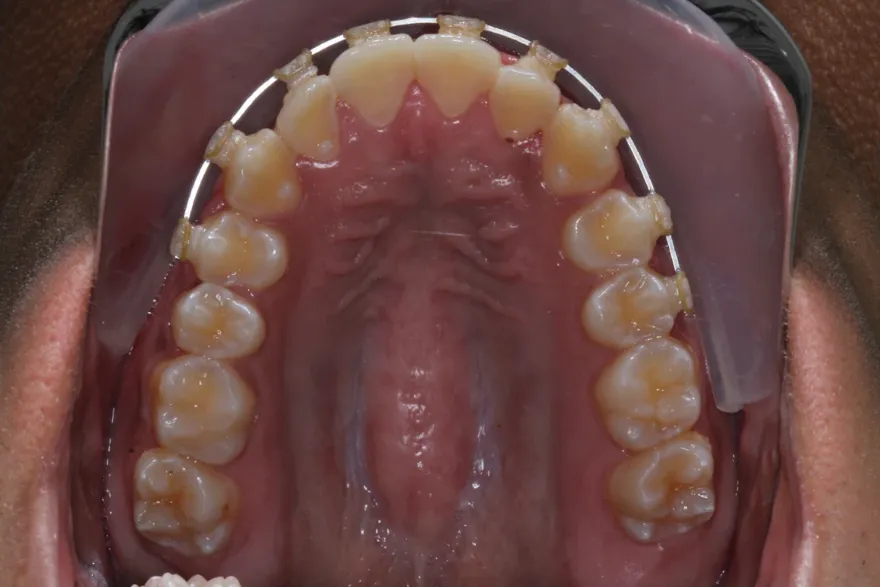
No início, dentes da frente desalinhados. Hoje, o aparelho conduz os dentes pelo arco.
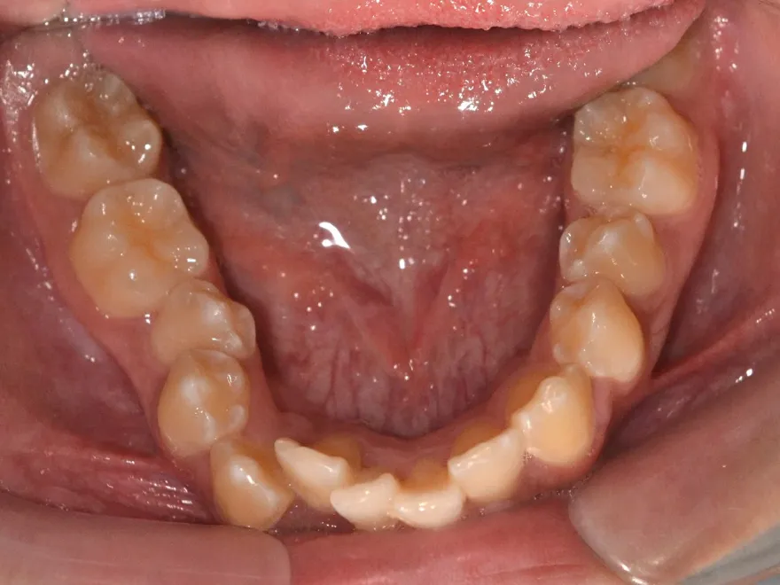
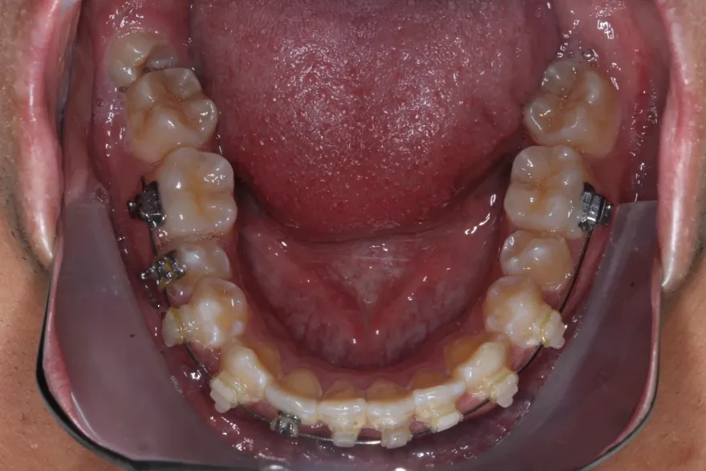
No início, dentes encavalados. Hoje, o aparelho conduz os dentes pelo arco.
Tratamento em andamento. Imagens de um único paciente, publicadas com autorização. O resultado varia de pessoa para pessoa e depende da avaliação clínica.
A mãe conta como tem sido o acompanhamento do tratamento ortodôntico do filho.
PENDENTE: autorização por escrito da mãe (vale também para a imagem do filho, que é menor) e confirmação do que ela diz no vídeoVocê escolhe o caminho que faz mais sentido. Nos dois, a avaliação e o acompanhamento são feitos pela Dra. Nayane.
Tem um desses planos? Chame no WhatsApp para confirmar o que a sua cobertura inclui antes de agendar.
PENDENTE: o que cada plano cobre na ortodontia, autorização e logotipos oficiais dos planos Confirmar meu plano pelo WhatsAppDo primeiro contato ao fim do tratamento, você sabe o que vem a seguir.
Você tira as primeiras dúvidas, confirma o convênio e agenda a avaliação.
Exame clínico, fotos de dentro e de fora da boca e radiografias, para entender o seu caso.
A Dra. Nayane explica o que encontrou, apresenta as opções de aparelho e tira as suas dúvidas.
O aparelho é instalado e acompanhado em consultas periódicas. PENDENTE: intervalo das manutenções
Dúvidas pelo WhatsApp ao longo de todo o tratamento. PENDENTE: como é o fim do tratamento (contenção e retornos)
“Eu avalio e somente indico tratamento em casos que realmente o paciente necessite.”
Cirurgiã-dentista há 15 anos, formada pela Faculdade São Leopoldo Mandic, em São Paulo, onde também fez a pós-graduação em Ortodontia.
A Ortodontia faz parte da história dela antes mesmo da profissão: usou aparelho dos 9 aos 16 anos e, curiosa, vivia perguntando à própria dentista como era o dia a dia no consultório.
Começou a carreira em 2012 e atuou por anos em clínicas dedicadas só à Ortodontia. Desde 2018 atende no próprio consultório, em Aracaju. No atendimento, presta atenção ao que cada paciente sinaliza e explica cada etapa com calma.
PENDENTE: a Dra. Nayane aprovar este texto e enviar a foto do diploma e dos certificadosCada consulta começa pela escuta e pelo exame, no consultório da Dra. Nayane, em Aracaju.
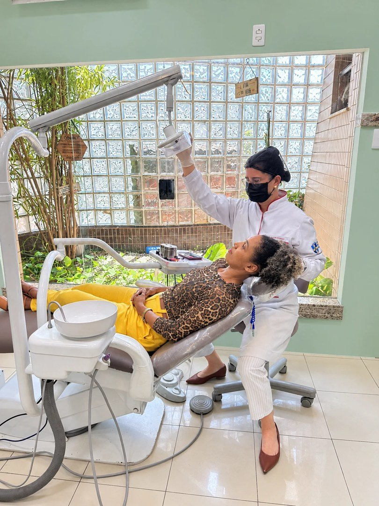
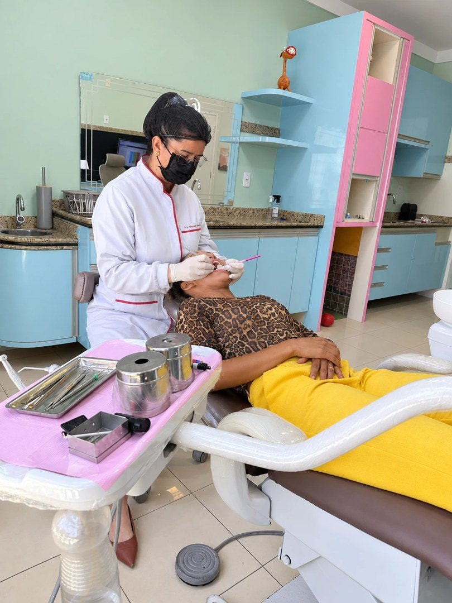
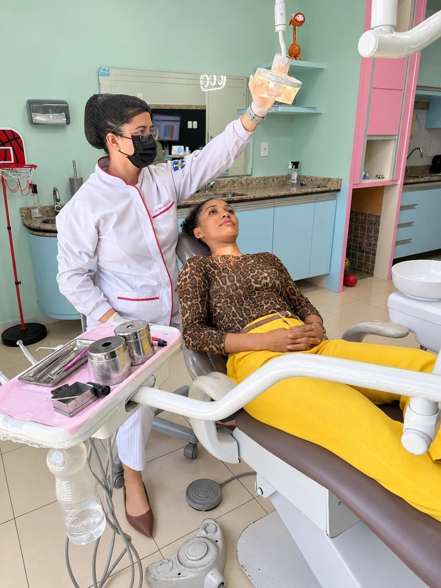
[PENDENTE: autorização escrita das pacientes para publicar estas imagens]
Ambiente claro, climatizado e organizado para as consultas de ortodontia, em Aracaju.
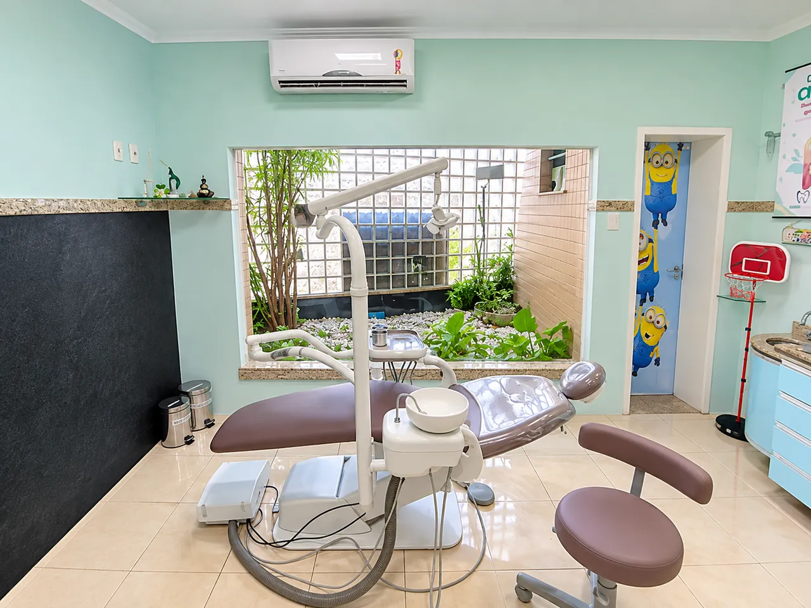
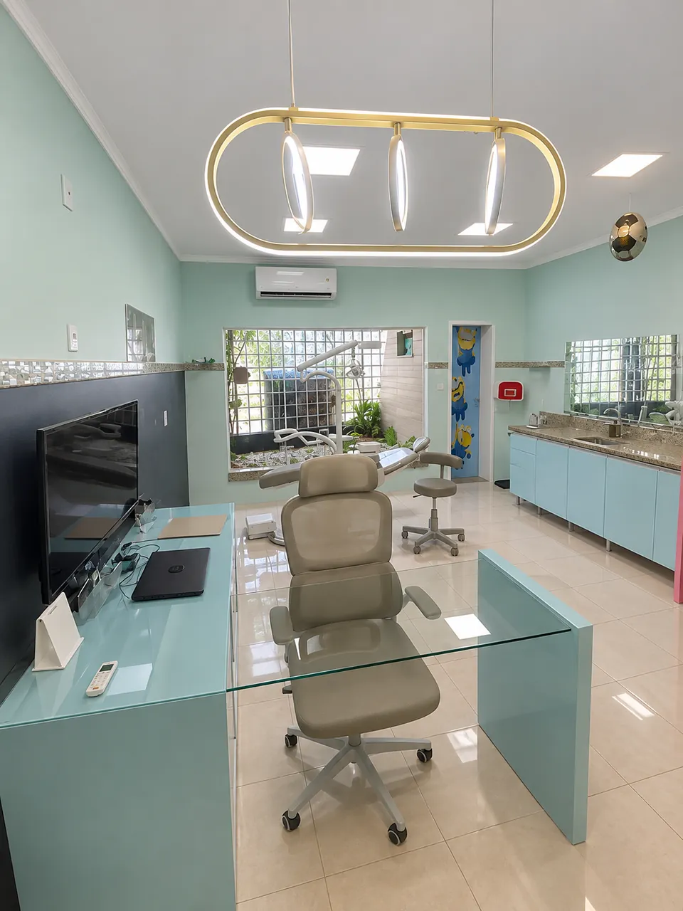
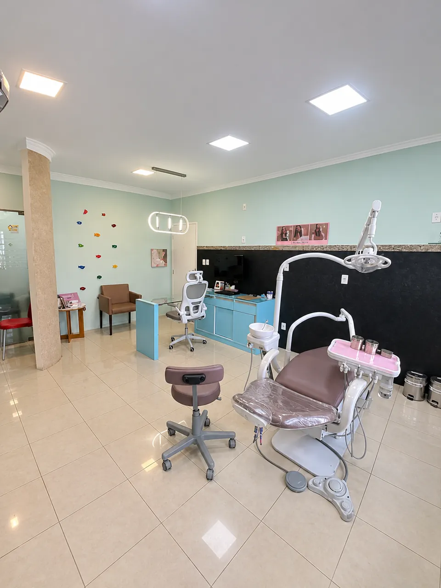
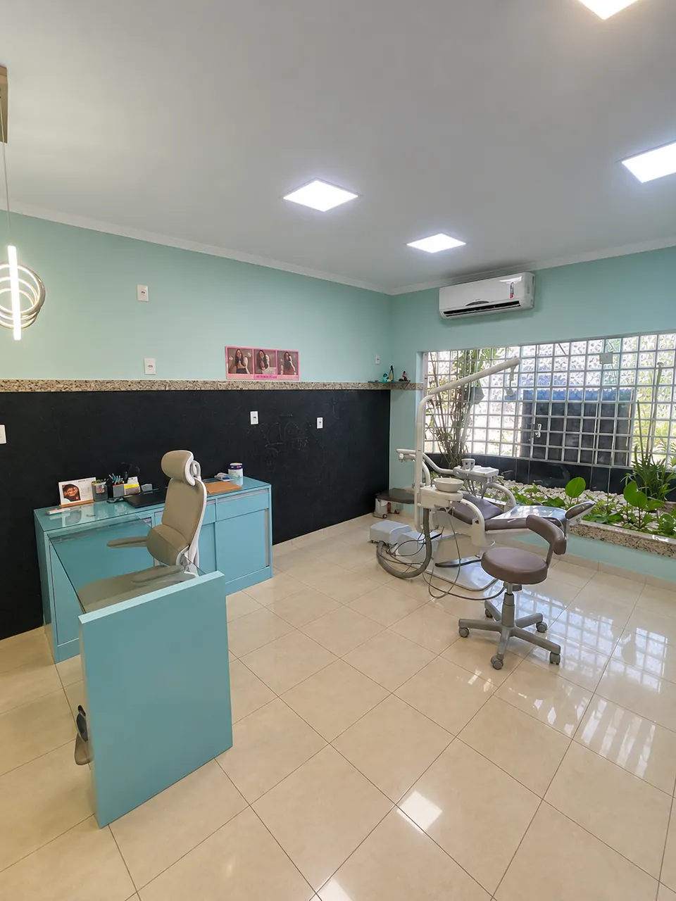
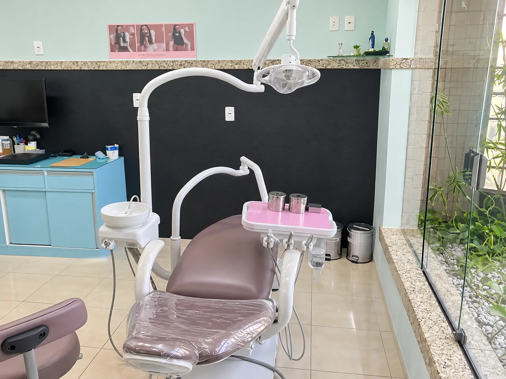
Rua Senador Rollemberg, 562
São José
Aracaju/SE, CEP 49015-120
* Consultas com agendamento prévio pelo WhatsApp (79) 99945-2813.
Abrir no Google MapsNão encontrou a sua? Pergunte pelo WhatsApp.
Tirar dúvida pelo WhatsAppSim. A ortodontia atende adolescentes e adultos. O tipo de aparelho e o planejamento são definidos depois da avaliação.
Em geral, a partir dos 11 anos. Cada caso é avaliado individualmente. PENDENTE: confirmar a idade mínima
O metálico e o de porcelana ficam fixos nos dentes; o de porcelana tem bráquetes na cor dos dentes, mais discretos. O alinhador transparente é removível e precisa ser usado pelo tempo indicado todos os dias. Na avaliação, a Dra. Nayane explica qual faz sentido para o seu caso.
A Dra. Nayane atende SulAmérica e Amil. O que cada plano cobre varia; chame no WhatsApp para confirmar antes de agendar.
Depende do caso e do tipo de aparelho. A previsão é apresentada no planejamento, depois da avaliação. PENDENTE: a Dra. Nayane autorizar uma faixa média
É comum sentir os dentes sensíveis nos primeiros dias depois da instalação e das manutenções. Qualquer desconforto pode ser conversado com a Dra. Nayane pelo WhatsApp.
O valor depende do tipo de aparelho e do planejamento de cada caso. Os valores e as condições são informados pelo WhatsApp.
Pelo WhatsApp, em qualquer botão desta página. O atendimento é de segunda a sexta, das 8h às 12h e das 14h às 17h.
Agende a sua avaliação de ortodontia com a Dra. Nayane Moreno.
Agendar avaliação pelo WhatsApp